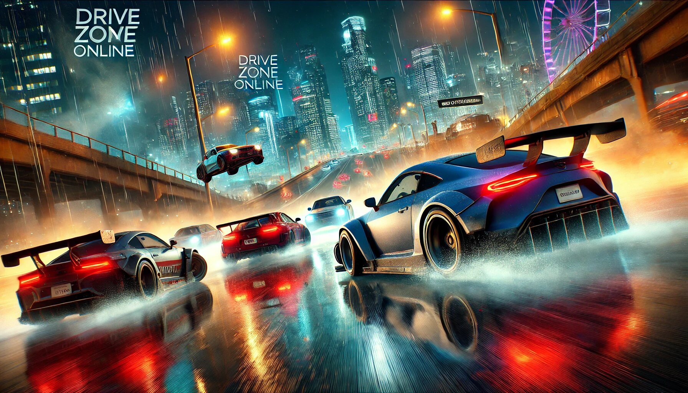

Driving enthusiasts, rejoice! If you’ve ever dreamed of hitting the virtual road, mastering sharp turns, or simply enjoying the thrill of speed without leaving your couch, Drive Zone Online is here to make your dreams come true. This online driving game has taken the gaming world by storm, offering an immersive experience that combines realism, fun, and endless entertainment. Whether you’re a casual gamer or a hardcore driving fanatic, Drive Zone Online has something for everyone. In this article, we’ll dive into the best features of this game and why it’s a must-try for anyone who loves cars, speed, and a good challenge.
Drive Zone Online is a multiplayer racing game that lets you experience the adrenaline rush of high-speed driving in a virtual world. Unlike traditional racing games, this one focuses on realism, offering a wide range of cars, customizable options, and dynamic environments. You can race against friends, compete in global tournaments, or simply cruise around the city to explore its beauty. The game is available on multiple platforms, making it accessible to players worldwide.
But what truly sets Drive Zone Online apart from other racing games? Let’s take a closer look at its standout features.
Drive Zone APK is a fantastic driving simulation game that offers an exciting and realistic driving experience right on your mobile device! With stunning graphics, smooth controls, and a wide variety of cars to choose from, it’s perfect for anyone who loves the thrill of the open road. The game also features multiple modes, including free roam and challenging missions, keeping you entertained for hours. Plus, the intuitive interface makes it easy for players of all skill levels to jump in and start driving. Whether you’re a casual gamer or a driving enthusiast, Drive Zone APK delivers endless fun—just don’t forget to obey the virtual traffic rules (unless you’re feeling a little rebellious)! Download it now and hit the road in style!
One of the first things you’ll notice when you start playing Drive Zone Online is its jaw-dropping graphics. The game boasts high-quality visuals that make every car, road, and landscape look incredibly real. From the gleaming paint on your car to the sun reflecting off the asphalt, every detail is designed to immerse you in the experience. The environments are equally impressive, with bustling city streets, serene countryside roads, and challenging tracks that keep you on your toes.
If you’re a car lover, you’re in for a treat. Drive Zone Online features an extensive collection of vehicles, from sleek sports cars to rugged off-roaders. Whether you’re into classic models or modern supercars, there’s something for every taste. Each car is meticulously designed to replicate its real-life counterpart, so you can feel like you’re driving your dream car without breaking the bank.
What’s better than driving a cool car? Driving a cool car that you’ve customized to your liking! Drive Zone Online lets you personalize your vehicles with a variety of options. Change the color, add decals, upgrade the engine, or tweak the suspension to suit your driving style. The possibilities are endless, and the best part is that you can show off your unique ride to other players.
Driving is more fun with friends, and Drive Zone Online understands that. The game’s multiplayer mode allows you to race against players from around the world in real-time. Compete in tournaments, join teams, or simply challenge your friends to a friendly race. The multiplayer mode adds a layer of excitement and unpredictability, as you never know who you’ll be up against.
Ever played a racing game where the cars feel like they’re floating? That’s not the case with Drive Zone Online. The game features realistic physics that make every turn, drift, and acceleration feel authentic. You’ll need to master the art of braking, steering, and accelerating to stay ahead of the competition. It’s challenging, but that’s what makes it so rewarding.
Drive Zone Online takes realism to the next level with its dynamic weather system and day-night cycle. One moment, you’re racing under the bright sun, and the next, you’re navigating through a thunderstorm or foggy conditions. These changes not only add visual variety but also affect gameplay, making each race unique and unpredictable.
If competitive racing isn’t your thing, don’t worry. Drive Zone Online offers an open-world mode where you can explore the game’s vast map at your own pace. Cruise through the city, discover hidden shortcuts, or simply enjoy the scenery. It’s a great way to unwind and appreciate the game’s attention to detail.
The developers of Drive Zone Online are constantly working to improve the game and keep it fresh. Regular updates bring new cars, tracks, and features, ensuring that there’s always something new to look forward to. This commitment to innovation keeps players engaged and coming back for more.
Even if you’re new to racing games, you’ll find Drive Zone Online easy to navigate. The user interface is intuitive and straightforward, allowing you to jump into the action without any hassle. The controls are also customizable, so you can set them up to match your preferences.
Drive Zone Online isn’t just a game; it’s a community. The game includes social features that let you connect with other players, join clubs, and share your achievements. Whether you’re looking for tips, bragging rights, or just some friendly banter, the game’s community aspect adds a whole new dimension to the experience.
With so many racing games out there, you might be wondering what makes Drive Zone Online special. The answer lies in its perfect blend of realism, variety, and fun. The game doesn’t just focus on speed; it emphasizes the joy of driving, the thrill of competition, and the satisfaction of mastering a skill. Whether you’re racing against the clock, exploring the open world, or customizing your dream car, Drive Zone Online offers an experience that’s both engaging and rewarding.
If you’re ready to hit the virtual road, here are a few tips to help you get started:
Drive Zone Online is more than just a game; it’s a celebration of driving. With its stunning graphics, realistic physics, and endless customization options, it offers an experience that’s hard to beat. Whether you’re a seasoned gamer or a casual player, this game has something to offer. So, what are you waiting for? Buckle up, hit the gas, and get ready for the ride of your life!
Pro Tip: If you’re reading this article, chances are you’re already curious about Drive Zone Online. Don’t wait—download it today and see for yourself why it’s one of the best racing games out there. And hey, if you beat my high score, let me know… I’ll be waiting! 😉